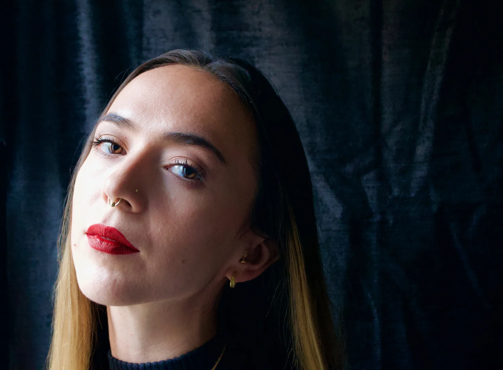

About

Adina Manghi Forsberg
born 1992 in Uppsala, Sweden
Raised in a family of musicians, Adina Forsberg has always surrounded herself with music. After years of studying and performing classical violin, she decided to devote all of her time to composing.
She is currently residing in Stockholm, where she freelances as a composer.
Curriculum Vitae
a shorter summary of highlights
Education
- 2020 - 2022: Masters in composition, Karin Rehnqvist, at Royal College of Music in Stockholm.
- 2017 - 2020: Bachelor in composition, Marie Samuelsson, at Royal College of Music in Stockholm.
- 2015 - 2017: Composition (pre college), Henrik Strindberg & Per Mårtensson, Gotlands Tonsättarskola in Visby.
Studies
- 2014 - 2015: Composition, Andrea Tarrodi, Stockholm.
- 2012 - 2013: Violin, Santosh Chavan, Kalkeri, India.
- 2010 - 2011: Violin, Johanna Tavelin, Stockholm.
- 2005 - 2010: Violin, Inge Thorsson, Uppsala.
- 2003 - 2005: Violin, Dag Björkling, Uppsala.
- 1997 - 2003: Violin, Gunnar Högmark, Uppsala.
Commissions
- 2023: Trio Älvkvarn, Uppsala.
- 2022: Trio Norna, Uppsala.
- 2021: Kungliga Akademiska Kapellet, Uppsala.
- 2020: Kungliga Akademiska Kapellet, Uppsala.
- 2020: Arrangement, Trio Titanic, Stockholm.
- 2019: (O)MEGA-4.
- 2019: Arrangement, Uppsala Kulturskola, Uppsala.
- 2018: Trio Olympia & K.A. Almgrens Sidenväveri, Stockholm.
Notable
- 2023: Residency, Atelier - Artist in Residence, Château de Bouthonvilliers, France.
- 2023: Performance by Orphei Drängar, Uppsala.
- 2022: Scholarship from STIM, Stockholm.
- 2022: Performance at Kungliga Operan, Stockholm.
- 2021: Grant from Kungliga Musikaliska Akademien’s local scholarship
- 2020: Scholarship from STIM, Stockholm.
- 2020: Scholarship from Musikens Hus Vänner, Uppsala.
- 2019: Grant from Kungliga Musikaliska Akademien’s local scholarship.
- 2017-2018: Project leader, ljudOljud festival at Royal College of Music, Stockholm
- 2016: Performances at Baltic Art Center, Visby.
- 2016: Gotland Artweek, premiere concert, Visby.
For more information or full CV, please:
Get in touch